AMIGO_LRank
Contents
Task description
- Computes (local) sensitivities for a given value of model
unknowns, keeps information for all observables and all experiments
- Computes overall (for all experiments and observables) ranking of
global unknowns (experiment independent parameters and initial
conditions) for a given value of the unknowns and a given experimental scheme.
Call AMIGO_LRank from command line
It is recommended to keep all inputs in a 'problem_file'.m. SObs task can then be called in two different ways:
1. Using the inputs structure:
> problem_file
> AMIGO_LRank(inputs)
2. Using the input file:
> AMIGO_LRank('problem_file') > AMIGO_LRank('problem_file','run_ident')Example
% TITLE: The circadian clock in Arabidopsis thaliana

%============================ % RESULTS PATHS RELATED DATA %============================ inputs.pathd.results_folder='arabidopsis'; % Folder to keep results (in Results\) inputs.pathd.short_name='arabidopsis'; % Label to identify figures and reports %============================ % MODEL DEFINITION %============================ inputs.model.n_st=7; % Number of states inputs.model.n_par=27; % Number of parameters inputs.model.n_stimulus=1; % Number of stimuli inputs.model.st_names=char('CL_m','CL_c',...% Names of the states 'CL_n','CT_m','CT_c','CT_n','CP_n'); inputs.model.par_names=char('n1','n2','g1','g2','m1','m2','m3','m4','m5','m6',... 'm7','k1','k2','k3','k4','k5','k6','k7','p1','p2',... 'p3','r1','r2','r3','r4','q1','q2'); % Names of the parameters inputs.model.stimulus_names=char('light'); % Names of the stimuli inputs.model.eqns=... % Model equations char('dCL_m=q1*CP_n*light+n1*CT_n/(g1+CT_n)-m1*CL_m/(k1+CL_m)',... 'dCL_c=p1*CL_m-r1*CL_c+r2*CL_n-m2*CL_c/(k2+CL_c)',... 'dCL_n=r1*CL_c-r2*CL_n-m3*CL_n/(k3+CL_n)',... 'dCT_m=n2*g2^2/(g2^2+CL_n^2)-m4*CT_m/(k4+CT_m)',... 'dCT_c=p2*CT_m-r3*CT_c+r4*CT_n-m5*CT_c/(k5+CT_c)',... 'dCT_n=r3*CT_c-r4*CT_n-m6*CT_n/(k6+CT_n)',... 'dCP_n=(1-light)*p3-m7*CP_n/(k7+CP_n)-q2*light*CP_n');
IMPORTANT:
User may select any customised name but: n, t, u, y, ydot, par, tlast, told, pend and v which are reserved words
inputs.model.par=[7.5038 0.6801 1.4992 3.0412 10.0982... % Nominal parameter 1.9685 3.7511 2.3422 7.2482 1.8981 1.2 3.8045... % values 5.3087 4.1946 2.5356 1.4420 4.8600 1.2 2.1994... 9.4440 0.5 0.2817 0.7676 0.4364 7.3021 4.5703 1.0]; %============================================ % EXPERIMENTAL SCHEME (SIMULATION CONDITIONS) %============================================ inputs.exps.n_exp=2; % Number of experiments % EXPERIMENT 1 inputs.exps.exp_y0{1}=[0 0 0 0 0 0 0]; % Initial conditions inputs.exps.t_f{1}=120; % Experiments duration inputs.exps.n_obs{1}=2; % Number of observables inputs.exps.obs_names{1}=char('Lum','mRNAa'); % Names of the observables inputs.exps.obs{1}=char('Lum=CL_m',... % Observation function 'mRNAa=CT_m'); inputs.exps.u_interp{1}='sustained'; % Stimuli definition for experiment 1 inputs.exps.t_con{1}=[0 120]; % Input swithching times including: % Initial and final time inputs.exps.u{1}=1; % Values of the inputs for exp 1 inputs.exps.n_s{1}=15; % Number of sampling times % EXPERIMENT 2 inputs.exps.exp_y0{2}=[0 0 0 0 0 0 0]; % Initial conditions inputs.exps.t_f{2}=120; % Experiments duration inputs.exps.n_obs{2}=2; % Number of observables inputs.exps.obs_names{2}=char('Lum','mRNAa'); % Names of the observables inputs.exps.obs{2}=char('Lum=CL_m',... % Observation function 'mRNAa=CT_m'); inputs.exps.u_interp{2}='pulse-down'; % Stimuli definition for experiment 2 inputs.exps.n_pulses{2}=5; % Number of pulses inputs.exps.u_min{2}=0; % Minimum and maximum of inputs inputs.exps.u_max{2}=1; inputs.exps.t_con{2}=0:12:120; % Input switching times inputs.exps.n_s{2}=25; % Number of sampling times %================================ % CALL AMIGO2 from COMMAND LINE %================================ AMIGO_Prep(inputs); % To preprocess the model & generate Fortran, C or MATLAB code AMIGO_LRank(inputs); % To perform task LRank
***********************************
AMIGO2, Copyright @CSIC
AMIGO2_R1_2015 [Oct 2015]
***********************************
*Date: 29-Oct-2015
------>Pre processing....this may take a few seconds.
------>Checking inputs....
------> WARNING message
AMIGO_check_model: You did not specify inputs.model.exe_type, standard will be assumed
By default ode15s will be used.
By default sensmat will be used.
------> Generating Matlab file...
D:\AMIGO2_REPO_2014\AMIGO_R2012_cvodes\Results\arabidopsis\fcn_arabidopsis.m
------>Files generated....
***********************************
AMIGO2, Copyright @CSIC
AMIGO2_R1_2015 [Oct 2015]
***********************************
*Date: 29-Oct-2015
------>Pre processing....this may take a few seconds.
------>Checking inputs....
------> WARNING message
AMIGO_check_model: You did not specify inputs.model.exe_type, standard will be assumed
By default ode15s will be used.
By default sensmat will be used.
------> WARNING message
You have not provided the sampling times.
Equidistant sampling will be assumed for experiment 1
Note however that you may modify your input file by adding
inputs.exps.t_s{iexp}
------> WARNING message
You have not provided the sampling times.
Equidistant sampling will be assumed for experiment 2
Note however that you may modify your input file by adding
inputs.exps.t_s{iexp}
Warning: Directory already exists.
------>Performing local sensitivity analysis and ranking of unknowns
-------------------------------
Local sensitivity problem related active settings
-------------------------------
senssolver: sensmat
ivp_RelTol: 1e-005
ivp_AbsTol: 1e-007
Backward Differentiation (BDF): on
modified sens_sys.m is used (ode15s based). For further info type 'help sens_sys'.
------> RANKING for experiment: 1
------>ABSOLUTE Ranking of model unknowns:
par value d_msqr d_mabs d_mean d_max d_min
____________________________________________________________________________________________
r1 2.8170e-001 1.0124e+000 3.8828e+000 -6.5972e-001 9.0513e+000 -1.5580e+001
r3 4.3640e-001 6.7858e-001 2.7104e+000 -1.2865e-001 5.9809e+000 -1.0345e+001
n2 6.8010e-001 5.6420e-001 2.3651e+000 7.3881e-001 8.1237e+000 -3.3620e+000
r2 7.6760e-001 2.0170e-001 7.6867e-001 1.3702e-001 3.2319e+000 -1.5892e+000
g1 1.4992e+000 1.9924e-001 7.9492e-001 3.6178e-002 3.0530e+000 -1.6793e+000
p1 2.1994e+000 1.8300e-001 6.3756e-001 -2.6724e-001 1.0981e+000 -3.0509e+000
m4 2.3422e+000 1.7132e-001 7.5841e-001 -2.2720e-001 1.2855e+000 -2.2944e+000
k4 2.5356e+000 1.1522e-001 5.1314e-001 1.6648e-001 1.4823e+000 -8.6503e-001
g2 3.0412e+000 1.0627e-001 3.9235e-001 1.0917e-001 1.6800e+000 -8.4677e-001
k1 3.8045e+000 8.7692e-002 3.4702e-001 -1.6589e-002 6.9305e-001 -1.3646e+000
n1 7.5038e+000 7.0418e-002 2.7725e-001 -1.4474e-002 5.5013e-001 -1.1009e+000
m1 1.0098e+001 4.8036e-002 1.8778e-001 9.7330e-003 7.5837e-001 -3.9792e-001
m2 1.9685e+000 4.3475e-002 1.4411e-001 1.2758e-001 6.4971e-001 -7.4068e-002
m5 7.2482e+000 4.0339e-002 1.8034e-001 -1.9000e-002 3.5974e-001 -4.4466e-001
r4 7.3021e+000 3.7834e-002 1.5078e-001 7.1813e-003 5.7991e-001 -3.2685e-001
m3 3.7511e+000 3.5987e-002 1.1508e-001 7.9837e-002 6.0864e-001 -1.0691e-001
p2 9.4440e+000 3.0285e-002 1.2476e-001 7.4522e-003 4.1398e-001 -1.8636e-001
k3 4.1946e+000 2.1671e-002 6.9605e-002 -4.7809e-002 9.8754e-002 -3.3603e-001
k5 1.4420e+000 1.7628e-002 6.9442e-002 9.4386e-003 2.5470e-001 -9.5837e-002
m6 1.8981e+000 8.3586e-003 3.6328e-002 -2.2413e-003 7.5655e-002 -1.0320e-001
k2 5.3087e+000 8.3118e-003 3.0979e-002 -1.7770e-002 5.5129e-002 -1.1295e-001
k6 4.8600e+000 2.5879e-003 1.1293e-002 7.6963e-004 3.1996e-002 -2.2379e-002
m7 1.2000e+000 0.0000e+000 0.0000e+000 0.0000e+000 0.0000e+000 0.0000e+000
k7 1.2000e+000 0.0000e+000 0.0000e+000 0.0000e+000 0.0000e+000 0.0000e+000
p3 5.0000e-001 0.0000e+000 0.0000e+000 0.0000e+000 0.0000e+000 0.0000e+000
q1 4.5703e+000 0.0000e+000 0.0000e+000 0.0000e+000 0.0000e+000 0.0000e+000
q2 1.0000e+000 0.0000e+000 0.0000e+000 0.0000e+000 0.0000e+000 0.0000e+000
____________________________________________________________________________________________
------>RELATIVE Ranking of model unknowns:
par value rd_msqr rd_mabs rd_mean rd_max rd_min
____________________________________________________________________________________________
____________________________________________________________________________________________
n1 7.5038e+000 5.8171e-001 2.3968e+000 -2.1393e-001 5.3423e+000 -9.0237e+000
m1 1.0098e+001 5.2934e-001 2.1703e+000 2.5133e-001 8.3651e+000 -4.5555e+000
m4 2.3422e+000 4.9852e-001 2.2386e+000 2.2887e-001 5.7664e+000 -3.7220e+000
p1 2.1994e+000 4.4038e-001 1.6188e+000 -6.0026e-001 3.1773e+000 -7.3295e+000
n2 6.8010e-001 4.3178e-001 1.9626e+000 -1.5848e-001 8.1237e+000 -4.5256e+000
m5 7.2482e+000 3.7945e-001 1.7218e+000 4.2833e-001 3.4303e+000 -3.1248e+000
k1 3.8045e+000 3.6734e-001 1.5231e+000 -1.3766e-001 3.3905e+000 -5.6708e+000
g2 3.0412e+000 3.6478e-001 1.4275e+000 2.5475e-001 5.5809e+000 -3.3878e+000
k4 2.5356e+000 3.5962e-001 1.6272e+000 -1.1624e-001 2.6032e+000 -4.0874e+000
p2 9.4440e+000 3.4168e-001 1.4902e+000 -5.4585e-001 2.7078e+000 -3.1881e+000
r3 4.3640e-001 3.3431e-001 1.3899e+000 -5.2025e-002 5.9809e+000 -1.0345e+001
g1 1.4992e+000 3.3376e-001 1.3894e+000 8.1250e-002 4.9996e+000 -3.3121e+000
r1 2.8170e-001 3.2950e-001 1.3247e+000 -9.2430e-002 9.0513e+000 -1.5580e+001
r4 7.3021e+000 3.1047e-001 1.2892e+000 5.9495e-002 4.6255e+000 -3.1398e+000
r2 7.6760e-001 1.7436e-001 6.9812e-001 8.7818e-002 3.2319e+000 -1.6049e+000
m3 3.7511e+000 1.4521e-001 5.1095e-001 3.4119e-001 2.4938e+000 -5.2758e-001
k3 4.1946e+000 9.5469e-002 3.3316e-001 -1.9417e-001 5.4495e-001 -1.5396e+000
m2 1.9685e+000 8.8976e-002 3.1647e-001 2.6843e-001 1.3970e+000 -1.9181e-001
k2 5.3087e+000 4.6721e-002 1.8658e-001 -6.9938e-002 3.8502e-001 -6.0258e-001
k5 1.4420e+000 4.0567e-002 1.4678e-001 2.9088e-002 5.1212e-001 -2.5298e-001
m6 1.8981e+000 2.1754e-002 9.2182e-002 3.2920e-002 2.3161e-001 -1.3566e-001
k6 4.8600e+000 1.7031e-002 7.2919e-002 -2.5741e-002 1.0770e-001 -1.7458e-001
m7 1.2000e+000 0.0000e+000 0.0000e+000 0.0000e+000 0.0000e+000 0.0000e+000
k7 1.2000e+000 0.0000e+000 0.0000e+000 0.0000e+000 0.0000e+000 0.0000e+000
p3 5.0000e-001 0.0000e+000 0.0000e+000 0.0000e+000 0.0000e+000 0.0000e+000
q1 4.5703e+000 0.0000e+000 0.0000e+000 0.0000e+000 0.0000e+000 0.0000e+000
q2 1.0000e+000 0.0000e+000 0.0000e+000 0.0000e+000 0.0000e+000 0.0000e+000
____________________________________________________________________________________________
------> RANKING for experiment: 2
------>ABSOLUTE Ranking of model unknowns:
par value d_msqr d_mabs d_mean d_max d_min
____________________________________________________________________________________________
r1 2.8170e-001 6.1790e-001 3.2629e+000 -3.4592e-001 9.5754e+000 -1.0885e+001
n2 6.8010e-001 4.6507e-001 2.4636e+000 8.8359e-001 6.9966e+000 -6.1835e+000
r3 4.3640e-001 4.5002e-001 2.4270e+000 9.2461e-002 7.5580e+000 -7.8407e+000
g1 1.4992e+000 1.3466e-001 7.3157e-001 -2.9649e-002 2.3837e+000 -2.2633e+000
r2 7.6760e-001 1.2784e-001 6.7006e-001 7.0420e-002 2.4116e+000 -1.9839e+000
m4 2.3422e+000 1.2728e-001 6.9939e-001 -2.5028e-001 1.5260e+000 -1.9874e+000
p3 5.0000e-001 1.2155e-001 5.8831e-001 -6.9164e-003 2.6186e+000 -1.7189e+000
p1 2.1994e+000 1.1705e-001 5.8916e-001 -2.1857e-001 1.3804e+000 -2.3205e+000
k4 2.5356e+000 8.3603e-002 4.6172e-001 1.7891e-001 1.3138e+000 -9.0344e-001
g2 3.0412e+000 6.5342e-002 3.3806e-001 7.8735e-002 1.1913e+000 -8.9734e-001
m7 1.2000e+000 6.1060e-002 2.9597e-001 1.3109e-003 8.6716e-001 -1.2799e+000
k1 3.8045e+000 5.5769e-002 3.0405e-001 1.4514e-002 9.2743e-001 -1.0334e+000
n1 7.5038e+000 4.8268e-002 2.6334e-001 9.2803e-003 7.8859e-001 -8.9417e-001
k7 1.2000e+000 3.8137e-002 1.8505e-001 -4.4310e-004 7.8540e-001 -5.4307e-001
m1 1.0098e+001 3.0755e-002 1.6752e-001 -7.2003e-003 5.9107e-001 -4.9705e-001
m2 1.9685e+000 3.0708e-002 1.4133e-001 1.2368e-001 5.6602e-001 -6.5941e-002
r4 7.3021e+000 2.5242e-002 1.3635e-001 -5.2162e-003 4.4381e-001 -4.2357e-001
p2 9.4440e+000 2.5104e-002 1.3441e-001 1.4495e-002 3.6629e-001 -3.1532e-001
m5 7.2482e+000 2.5004e-002 1.3896e-001 -1.4917e-002 1.8324e-001 -4.0430e-001
m3 3.7511e+000 2.4238e-002 1.1356e-001 7.2529e-002 4.8440e-001 -1.7654e-001
q2 1.0000e+000 1.9440e-002 9.3723e-002 -2.2078e-003 2.7671e-001 -3.7505e-001
k3 4.1946e+000 1.4075e-002 6.7716e-002 -4.3965e-002 8.3804e-002 -2.4698e-001
k5 1.4420e+000 1.2188e-002 6.7067e-002 1.1329e-002 2.0304e-001 -9.2496e-002
q1 4.5703e+000 7.2777e-003 3.5241e-002 -5.2881e-004 1.5665e-001 -1.0296e-001
m6 1.8981e+000 5.8741e-003 3.2775e-002 -2.6983e-003 7.1671e-002 -8.8711e-002
k2 5.3087e+000 5.3179e-003 2.5596e-002 -1.6923e-002 3.1410e-002 -9.8955e-002
k6 4.8600e+000 1.8301e-003 1.0221e-002 9.1822e-004 2.7637e-002 -2.1212e-002
____________________________________________________________________________________________
------>RELATIVE Ranking of model unknowns:
par value rd_msqr rd_mabs rd_mean rd_max rd_min
____________________________________________________________________________________________
____________________________________________________________________________________________
n1 7.5038e+000 4.6933e-001 2.5204e+000 1.9825e-001 7.3958e+000 -8.8729e+000
m1 1.0098e+001 3.9386e-001 2.1295e+000 -1.2075e-001 7.8930e+000 -5.4567e+000
n2 6.8010e-001 3.3329e-001 1.8817e+000 1.8515e-001 6.9966e+000 -6.1835e+000
p1 2.1994e+000 3.0834e-001 1.6095e+000 -3.4844e-001 3.9214e+000 -6.7491e+000
m4 2.3422e+000 3.0700e-001 1.8423e+000 -4.4581e-002 4.7498e+000 -3.0608e+000
k1 3.8045e+000 2.7239e-001 1.4685e+000 1.1678e-001 4.1485e+000 -5.1991e+000
p2 9.4440e+000 2.7025e-001 1.5155e+000 -2.9725e-001 3.0638e+000 -3.9380e+000
g1 1.4992e+000 2.6490e-001 1.4116e+000 -1.4345e-001 4.7257e+000 -4.4833e+000
r3 4.3640e-001 2.5978e-001 1.3705e+000 1.6166e-001 7.5580e+000 -7.8407e+000
g2 3.0412e+000 2.4826e-001 1.3005e+000 7.0691e-002 4.7909e+000 -4.0014e+000
r4 7.3021e+000 2.4311e-001 1.2863e+000 -1.4381e-001 4.2855e+000 -4.2114e+000
r1 2.8170e-001 2.2535e-001 1.1776e+000 6.7580e-002 9.5754e+000 -1.0885e+001
m5 7.2482e+000 2.2052e-001 1.2566e+000 4.0754e-001 3.4725e+000 -1.9080e+000
k4 2.5356e+000 2.1391e-001 1.3062e+000 6.2186e-002 2.1848e+000 -3.0344e+000
r2 7.6760e-001 1.2541e-001 6.5800e-001 -1.3693e-002 2.4479e+000 -1.9839e+000
m7 1.2000e+000 1.0810e-001 4.8957e-001 8.5542e-002 2.5756e+000 -1.6897e+000
m3 3.7511e+000 1.0208e-001 5.0423e-001 2.5563e-001 2.4028e+000 -7.5702e-001
p3 5.0000e-001 9.0017e-002 4.0649e-001 -7.6022e-002 2.6186e+000 -2.1592e+000
k7 1.2000e+000 6.7461e-002 3.0586e-001 -5.2241e-002 1.0369e+000 -1.6041e+000
k3 4.1946e+000 6.3194e-002 3.2806e-001 -1.4828e-001 7.1486e-001 -1.3078e+000
m2 1.9685e+000 6.0335e-002 2.9732e-001 2.2735e-001 1.2481e+000 -3.3642e-001
q1 4.5703e+000 4.9364e-002 2.2278e-001 -4.2721e-002 7.8765e-001 -1.1877e+000
k2 5.3087e+000 2.8383e-002 1.5100e-001 -5.6941e-002 4.5855e-001 -4.5862e-001
q2 1.0000e+000 2.8214e-002 1.2800e-001 1.6516e-002 6.4921e-001 -4.3388e-001
k5 1.4420e+000 2.8019e-002 1.3674e-001 2.7949e-002 6.6014e-001 -2.3197e-001
m6 1.8981e+000 1.3048e-002 7.5510e-002 2.3746e-002 1.8078e-001 -1.1043e-001
k6 4.8600e+000 1.0351e-002 6.0114e-002 -1.8540e-002 8.8088e-002 -1.3680e-001
____________________________________________________________________________________________
------> OVERALL RANKING
------>ABSOLUTE Ranking of GLOBAL model unknowns:
par value d_msqr d_mabs d_mean d_max d_min
____________________________________________________________________________________________
____________________________________________________________________________________________
r1 2.8170e-001 8.1513e-001 3.5729e+000 -5.0282e-001 9.5754e+000 -1.5580e+001
r3 4.3640e-001 5.6430e-001 2.5687e+000 -1.8095e-002 7.5580e+000 -1.0345e+001
n2 6.8010e-001 5.1464e-001 2.4144e+000 8.1120e-001 8.1237e+000 -6.1835e+000
g1 1.4992e+000 1.6695e-001 7.6325e-001 3.2644e-003 3.0530e+000 -2.2633e+000
r2 7.6760e-001 1.6477e-001 7.1937e-001 1.0372e-001 3.2319e+000 -1.9839e+000
p1 2.1994e+000 1.5002e-001 6.1336e-001 -2.4290e-001 1.3804e+000 -3.0509e+000
m4 2.3422e+000 1.4930e-001 7.2890e-001 -2.3874e-001 1.5260e+000 -2.2944e+000
k4 2.5356e+000 9.9411e-002 4.8743e-001 1.7270e-001 1.4823e+000 -9.0344e-001
g2 3.0412e+000 8.5804e-002 3.6521e-001 9.3953e-002 1.6800e+000 -8.9734e-001
k1 3.8045e+000 7.1730e-002 3.2553e-001 -1.0373e-003 9.2743e-001 -1.3646e+000
p3 5.0000e-001 6.0776e-002 2.9415e-001 -3.4582e-003 2.6186e+000 -1.7189e+000
n1 7.5038e+000 5.9343e-002 2.7029e-001 -2.5971e-003 7.8859e-001 -1.1009e+000
m1 1.0098e+001 3.9395e-002 1.7765e-001 1.2663e-003 7.5837e-001 -4.9705e-001
m2 1.9685e+000 3.7091e-002 1.4272e-001 1.2563e-001 6.4971e-001 -7.4068e-002
m5 7.2482e+000 3.2671e-002 1.5965e-001 -1.6958e-002 3.5974e-001 -4.4466e-001
r4 7.3021e+000 3.1538e-002 1.4356e-001 9.8254e-004 5.7991e-001 -4.2357e-001
m7 1.2000e+000 3.0530e-002 1.4798e-001 6.5547e-004 8.6716e-001 -1.2799e+000
m3 3.7511e+000 3.0112e-002 1.1432e-001 7.6183e-002 6.0864e-001 -1.7654e-001
p2 9.4440e+000 2.7695e-002 1.2958e-001 1.0974e-002 4.1398e-001 -3.1532e-001
k7 1.2000e+000 1.9069e-002 9.2527e-002 -2.2155e-004 7.8540e-001 -5.4307e-001
k3 4.1946e+000 1.7873e-002 6.8661e-002 -4.5887e-002 9.8754e-002 -3.3603e-001
k5 1.4420e+000 1.4908e-002 6.8255e-002 1.0384e-002 2.5470e-001 -9.5837e-002
q2 1.0000e+000 9.7201e-003 4.6862e-002 -1.1039e-003 2.7671e-001 -3.7505e-001
m6 1.8981e+000 7.1163e-003 3.4551e-002 -2.4698e-003 7.5655e-002 -1.0320e-001
k2 5.3087e+000 6.8149e-003 2.8288e-002 -1.7346e-002 5.5129e-002 -1.1295e-001
q1 4.5703e+000 3.6389e-003 1.7620e-002 -2.6440e-004 1.5665e-001 -1.0296e-001
k6 4.8600e+000 2.2090e-003 1.0757e-002 8.4393e-004 3.1996e-002 -2.2379e-002
____________________________________________________________________________________________
------>RELATIVE Ranking of GLOBAL model unknowns:
par value rd_msqr rd_mabs rd_mean rd_max rd_min
____________________________________________________________________________________________
n1 7.5038e+000 5.2552e-001 2.4586e+000 -7.8426e-003 7.3958e+000 -9.0237e+000
m1 1.0098e+001 4.6160e-001 2.1499e+000 6.5288e-002 8.3651e+000 -5.4567e+000
m4 2.3422e+000 4.0276e-001 2.0404e+000 9.2147e-002 5.7664e+000 -3.7220e+000
n2 6.8010e-001 3.8253e-001 1.9222e+000 1.3332e-002 8.1237e+000 -6.1835e+000
p1 2.1994e+000 3.7436e-001 1.6141e+000 -4.7435e-001 3.9214e+000 -7.3295e+000
k1 3.8045e+000 3.1987e-001 1.4958e+000 -1.0438e-002 4.1485e+000 -5.6708e+000
g2 3.0412e+000 3.0652e-001 1.3640e+000 1.6272e-001 5.5809e+000 -4.0014e+000
p2 9.4440e+000 3.0597e-001 1.5028e+000 -4.2155e-001 3.0638e+000 -3.9380e+000
m5 7.2482e+000 2.9999e-001 1.4892e+000 4.1794e-001 3.4725e+000 -3.1248e+000
g1 1.4992e+000 2.9933e-001 1.4005e+000 -3.1098e-002 4.9996e+000 -4.4833e+000
r3 4.3640e-001 2.9704e-001 1.3802e+000 5.4819e-002 7.5580e+000 -1.0345e+001
k4 2.5356e+000 2.8677e-001 1.4667e+000 -2.7027e-002 2.6032e+000 -4.0874e+000
r1 2.8170e-001 2.7742e-001 1.2511e+000 -1.2425e-002 9.5754e+000 -1.5580e+001
r4 7.3021e+000 2.7679e-001 1.2878e+000 -4.2159e-002 4.6255e+000 -4.2114e+000
r2 7.6760e-001 1.4988e-001 6.7806e-001 3.7063e-002 3.2319e+000 -1.9839e+000
m3 3.7511e+000 1.2365e-001 5.0759e-001 2.9841e-001 2.4938e+000 -7.5702e-001
k3 4.1946e+000 7.9332e-002 3.3061e-001 -1.7123e-001 7.1486e-001 -1.5396e+000
m2 1.9685e+000 7.4656e-002 3.0689e-001 2.4789e-001 1.3970e+000 -3.3642e-001
m7 1.2000e+000 5.4052e-002 2.4478e-001 4.2771e-002 2.5756e+000 -1.6897e+000
p3 5.0000e-001 4.5008e-002 2.0325e-001 -3.8011e-002 2.6186e+000 -2.1592e+000
k2 5.3087e+000 3.7552e-002 1.6879e-001 -6.3439e-002 4.5855e-001 -6.0258e-001
k5 1.4420e+000 3.4293e-002 1.4176e-001 2.8519e-002 6.6014e-001 -2.5298e-001
k7 1.2000e+000 3.3730e-002 1.5293e-001 -2.6121e-002 1.0369e+000 -1.6041e+000
q1 4.5703e+000 2.4682e-002 1.1139e-001 -2.1360e-002 7.8765e-001 -1.1877e+000
m6 1.8981e+000 1.7401e-002 8.3846e-002 2.8333e-002 2.3161e-001 -1.3566e-001
q2 1.0000e+000 1.4107e-002 6.4002e-002 8.2582e-003 6.4921e-001 -4.3388e-001
k6 4.8600e+000 1.3691e-002 6.6516e-002 -2.2141e-002 1.0770e-001 -1.7458e-001
____________________________________________________________________________________________
> NaN% of successful simulationn
> NaN% of successful sensitivity calculations
------>Plotting results....
------> WARNING message
Overall ranking plots are available for more than one unknown initial condition
------>Results (report and struct_results.mat) and plots were kept in the directory:
Results\arabidopsis\LRank_arabidopsis_run1
Click <a href="matlab: cd('D:\AMIGO2_REPO_2014\AMIGO_R2012_cvodes\Results\arabidopsis\LRank_arabidopsis_run1')">here</a> to go to the results folder or <a href="matlab: load('D:\AMIGO2_REPO_2014\AMIGO_R2012_cvodes\Results\arabidopsis\LRank_arabidopsis_run1\strreport_arabidopsis_run1.mat')">here</a> to load the results.
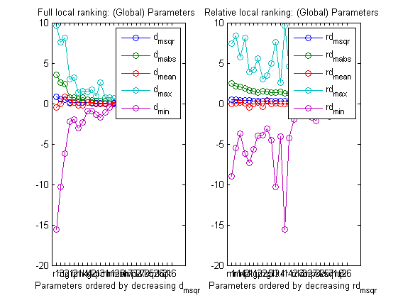 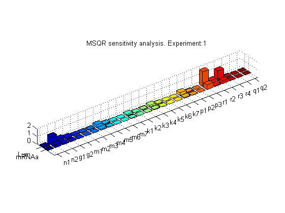  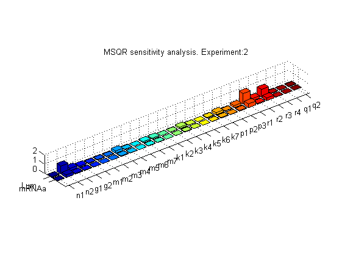 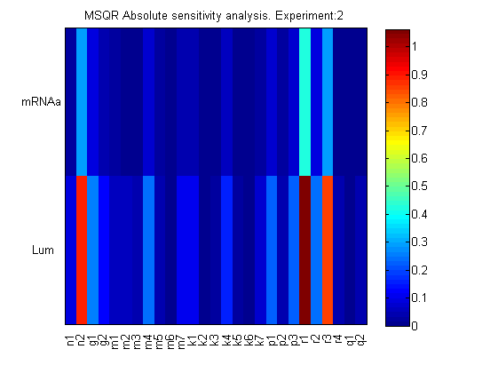 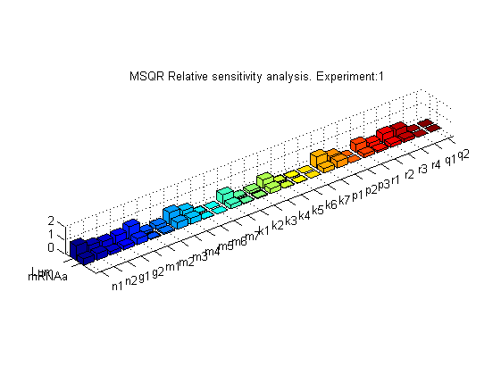 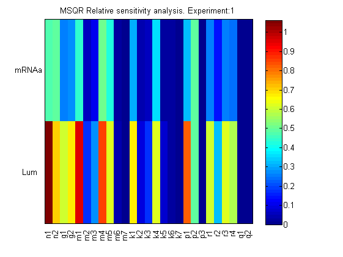 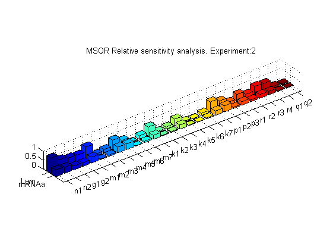
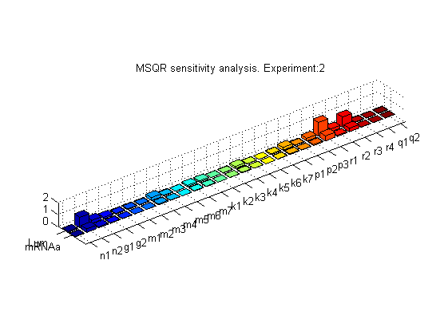 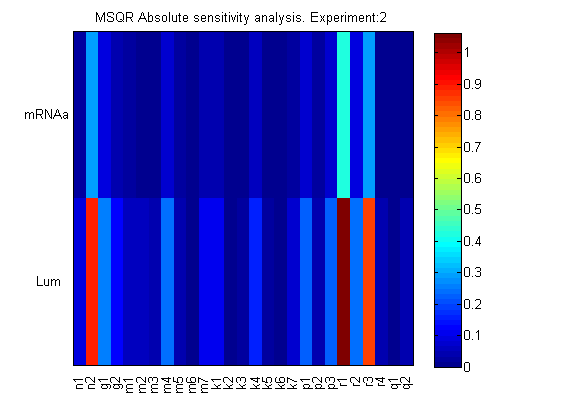 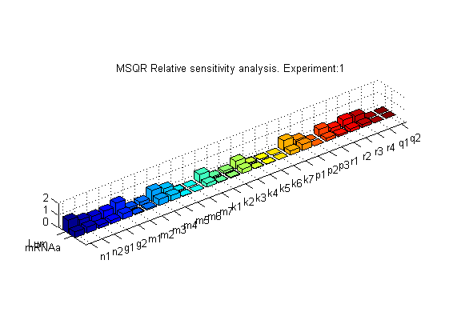 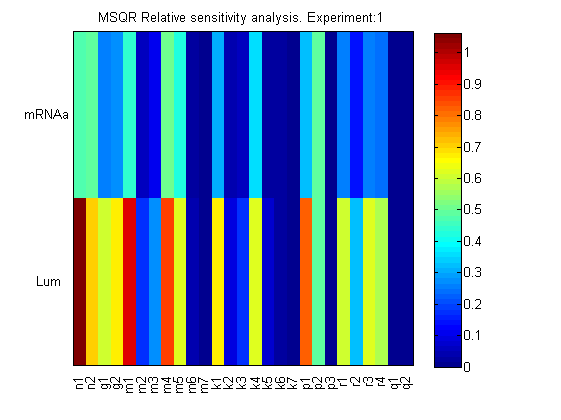 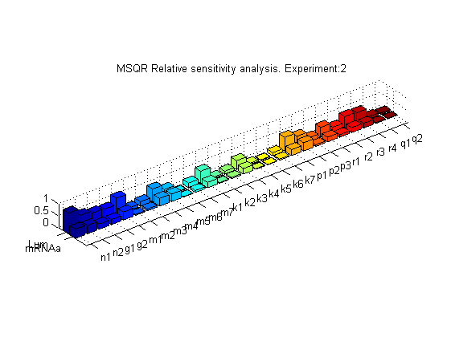 
See also
References
Model was taken from:
Locke J.C.W; A.J. Millar; M.S. Turner. Modelling genetic networks with noisy and varied experimental data: the circadian clock in Arabidopsis thaliana. J Theor Biol,2005, 234:383-393.
Details on ranking of parameters:
Brun R, Reichert P: Practical identifiability analysis of large environmental simulation models. Water Resources Res 2001, 37:1015-1030.
Balsa-Canto E, AA Alonso, JR Banga.An iterative identification procedure for dynamic modeling of biochemical networks. BMC Systems Biology, 2010, 4:11.
AMIGO_htmldoc_inputs(inputs,fullfile(pwd,'html','lrankex1.html'));